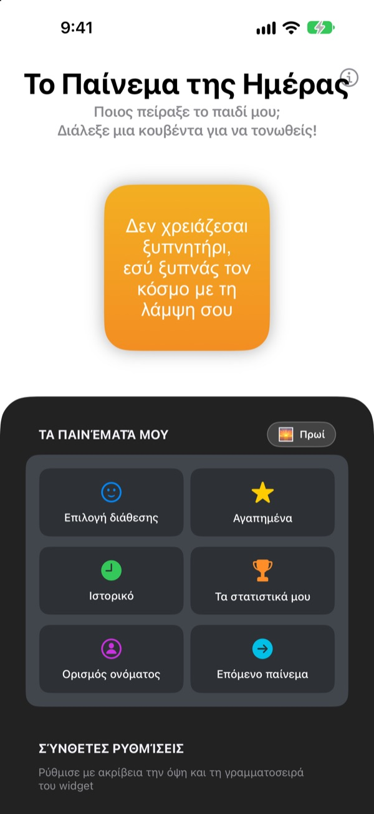
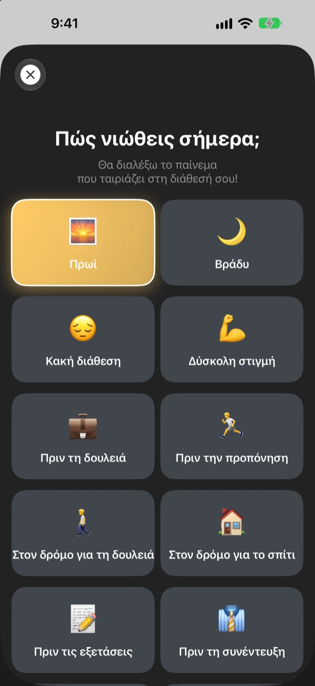
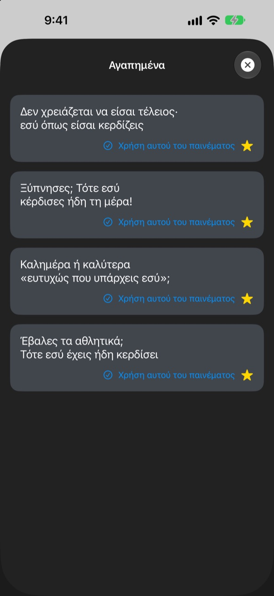
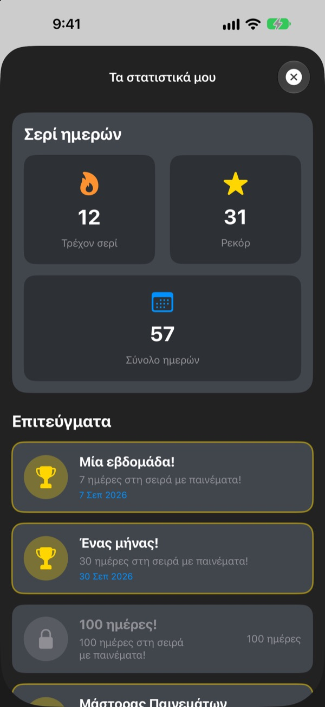

Κάθε φορά που πιάνεις το κινητό,
ο μεγαλύτερος θαυμαστής σου περιμένει
Το Παίνεμα της Ημέρας είναι ένα widget που σε παινεύει υπερβολικά, και το κάνει επίτηδες. Το πρωί ένα πρωινό παίνεμα, πριν τη συνέντευξη ένα για τη συνέντευξη. Γραμματοσειρά, χρώματα και φόντο τα ρυθμίζεις όπως θέλεις.
Μία αγορά και τα έχεις όλα. Χωρίς συνδρομή, χωρίς διαφημίσεις.

Πάρε ένα παίνεμα τώρα
Διάλεξε διάθεση και το widget δείχνει το παίνεμα που ταιριάζει. Πάτα Επόμενο παίνεμα για ένα τυχαίο από τα 281.
Ποιος είναι ο πιο αυστηρός σου κριτής; Μήπως εσύ;
Στον δρόμο για τη δουλειά, πριν τη συνέντευξη, στον δρόμο για το σπίτι, η φωνή στο κεφάλι σου κυρίως γκρινιάζει. Το Παίνεμα της Ημέρας παίρνει το μέρος σου από την οθόνη Αφετηρίας πολλές φορές τη μέρα, λίγο παραπάνω απ' όσο πρέπει. Μόλις σου ξεφύγει ένα χαμόγελο, γυρίζει και λίγη αυτοπεποίθηση.
Παίνεμα για κάθε διάθεση
Διάλεξε ανάμεσα σε 14 διαθέσεις και περιστάσεις, όπως Πρωί, Στον δρόμο για τη δουλειά, Δύσκολη στιγμή, Πριν τη συνέντευξη ή Πριν το ραντεβού, και το ταιριαστό παίνεμα εμφανίζεται αμέσως στο widget. Δεν αποφασίζεις; Υπάρχει και το Τυχαίο.

Κράτα όσα αγαπάς
Πάτα το αστέρι για να το βάλεις στα Αγαπημένα και ξαναδές τα παλιότερα στο Ιστορικό. Πάτα Χρήση αυτού του παινέματος και μπαίνει κατευθείαν στο widget.

Πέρνα κάθε μέρα και μετράει
Κάθε μέρα που ρίχνεις μια ματιά μεγαλώνει το σερί σου. Στις 7, 30 ή 100 μέρες στη σειρά, και στις 50 και 100 μέρες συνολικά, ξεκλειδώνεις επιτεύγματα.

Ξεκινάς σε τρία βήματα
- 1
Διάλεξε διάθεση
Άνοιξε την
Επιλογή διάθεσηςκαι πάτα αυτή που ταιριάζει τώρα. - 2
Φτιάξε το widget
Στις σύνθετες ρυθμίσεις διάλεξε γραμματοσειρά, χρώμα κειμένου, φόντο και συχνότητα ανανέωσης.
- 3
Βάλ' το στην οθόνη Αφετηρίας
Άγγιξε παρατεταμένα την οθόνη Αφετηρίας, πάτα + και βρες το Παίνεμα της Ημέρας.
Το widget όπως το θέλεις
- Γραμματοσειρά
- 13 επιλογές, ανάμεσά τους Futura, Georgia και Marker Felt
- Χρώμα κειμένου
- Όποιο χρώμα σού αρέσει
- Φόντο
- Διαβάθμιση δύο χρωμάτων ή μία από τις ενσωματωμένες φωτογραφίες
- Στοίχιση
- Αριστερά, στο κέντρο ή δεξιά
- Διάστιχο
- Πιο πυκνές ή πιο αραιές γραμμές
- Συχνότητα ανανέωσης
- Νέο παίνεμα κάθε 5, 15 ή 30 λεπτά
Το μέγεθος του widget το διαλέγεις όταν το προσθέτεις στην οθόνη Αφετηρίας.
Το αγοράζεις μία φορά και τέλος
Η εφαρμογή
- 281 παινέματα για 14 διαθέσεις
- Widget οθόνης Αφετηρίας στο στιλ σου
- Αγαπημένα και Ιστορικό
- Σερί και επιτεύγματα
Στήριξε τον δημιουργό
- Διάλεξε μικρό, μεσαίο ή μεγάλο φιλοδώρημα
- Δεν ξεκλειδώνει τίποτα. Είναι απλώς ένα ευχαριστώ
Μόνο αν και όποτε το θελήσεις.
Χωρίς συνδρομή, χωρίς επιπλέον αγορές, χωρίς διαφημίσεις.
Συχνές ερωτήσεις
Πώς προσθέτω το widget;
Άγγιξε παρατεταμένα ένα κενό σημείο της οθόνης Αφετηρίας μέχρι να κουνηθούν τα εικονίδια, πάτα + επάνω, αναζήτησε το Παίνεμα της Ημέρας και διάλεξε μέγεθος.
Πώς επιλέγεται το επόμενο παίνεμα;
Όταν διαλέγεις διάθεση, ένα παίνεμα γι' αυτήν μπαίνει αμέσως στο widget. Μετά, το widget δείχνει ένα τυχαίο από τα 281 με τη συχνότητα που επέλεξες. Στην εφαρμογή μπορείς επίσης να πατήσεις Επόμενο παίνεμα για να το αλλάξεις μόνος σου.
Αλλάζει η γραμματοσειρά ή η συχνότητα ανανέωσης;
Ναι. Στις σύνθετες ρυθμίσεις αλλάζεις γραμματοσειρά, χρώμα κειμένου, φόντο, στοίχιση, διάστιχο και συχνότητα ανανέωσης: 5, 15 ή 30 λεπτά.
Το widget δεν άλλαξε αμέσως.
Το iOS αποφασίζει πότε ξανασχεδιάζονται τα widget, οπότε μερικές φορές καθυστερεί λίγο σε σχέση με τη συχνότητα που διάλεξες. Άνοιξε την εφαρμογή και κλείσ' την, και το widget ενημερώνεται.
Πώς λειτουργεί το σερί;
Κάθε συνεχόμενη μέρα που βλέπεις παίνεμα προσθέτει μία μέρα στο σερί. Στα Τα στατιστικά μου βλέπεις το τρέχον σερί, το ρεκόρ, το σύνολο ημερών και τα επιτεύγματα.
Χάθηκαν τα αγαπημένα και το ιστορικό μου.
Όλα αποθηκεύονται μόνο στη συσκευή σου, οπότε δεν μεταφέρονται αν διαγράψεις την εφαρμογή ή αλλάξεις κινητό. Αν δεν τη διέγραψες και χάθηκαν, στείλε μας email.
Στέλνονται κάπου τα δεδομένα μου;
Όχι. Η εφαρμογή δεν συλλέγει προσωπικά δεδομένα. Τα αγαπημένα και το ιστορικό μένουν στη συσκευή σου.
Πώς αναφέρω ένα σφάλμα ή προτείνω κάτι;
Κατευθείαν από την Επικοινωνία με τον δημιουργό στην εφαρμογή, με email ή με μήνυμα στο Instagram @lee25_ios. Απαντάμε μόλις το δούμε.
Ερωτήσεις ή ιδέες; Γράψε στο leeo@kakao.com.